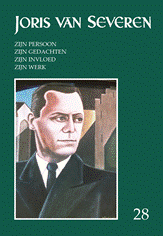
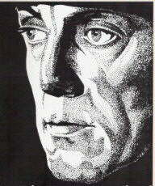
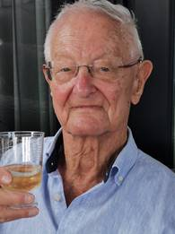
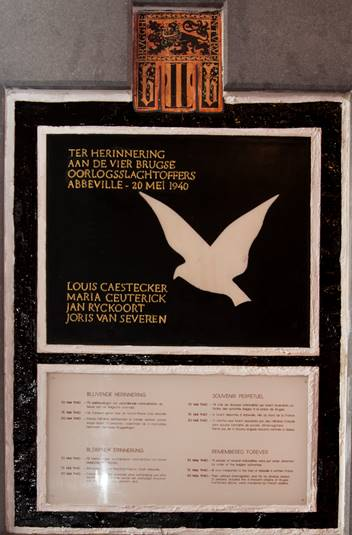

> nieuwsbrief Joris van Severen Instituut 2024- nr 2
Inhoud
Lezers die hun
bijdrage voor 2024 nog niet vereffenden vinden hierbij
andermaal een betaalformulier. Ten gevolge van de alweer
gestegen druk- en portkosten dienen we de minimumbijdrage
licht te verhogen tot 35 €. In ruil daarvoor verzekeren we u
de stipte toezending van het nieuwe Jaarboek Joris van
Severen – het 28e al – in de
meimaand en van de vier nummers van ons kwartaalblad Nieuwsbrief Joris van
Severen. Vanaf het bedrag van 40 €
boeken we u met dank als steunend lid. Vereffening graag via
onze rekening BE29 4650 2267 2164 op naam van het
Joris van Severen Instituut, Izegem.
Herdenkingsmomenten
2024
Bij middel
bijliggend vouwblad vragen we graag uw aandacht voor de mede
door het Joris van Severen Instituut en het Abbeville Comité
geplande
herdenkingsmomenten 2024.
We hopen er u te mogen ontmoeten. Zie ook pp. 6 en volgende.
Hier Dinaso!
Langs de
volgende koppeling kan je de volledige reeks van Hier
Dinaso! chronologisch bekijken. De
makkelijkere toegang is:
https://www.delpher.nl/nl/tijdschriften/results?query=Hier+Dinaso%21&coll=dts
Dank zij een
sterke zoekmotor op die site, de opzoeking uiterst snel
verloopt. Zo zocht ik bijvoorbeeld info over de kleine
afdeling van Verdinaso die in de gemeente Lommel zou hebben
bestaan. Dat bleek zeer eenvoudig te zijn: gewoonweg de
zoektermen Dinaso + Lommel invoeren en klaar is kees.
Het Joris van Severen Instituut
Op pagina 9 van dit nummer brengen we een overzicht van de samenstelling van het huidige bestuur van de vereniging, gevormd door enerzijds de Raad van Bestuur (m.a.w. het Dagelijks Bestuur) en anderzijds de Algemene Vergadering, die mede de krijtlijnen uitzet.
Ten geleide Jaarboek Joris van Severen 28 (2024)
Met de aflevering 2024 zijn we aan het 28e Jaarboek Joris van Severen toe. We brengen andermaal een ruime verscheidenheid aan bijdragen die op een of andere wijze inzoomen op de ondertitel van deze reeks: Joris van Severen, zijn persoon, zijn ideeën, zijn invloed en zijn werk.
Vooreerst
rondt Romain Vanlandschoot met de Sisyphus-arbeid van Joris van
Severen zijn verfijnde
biografie over Van Severen af met de periode 26 mei 1929 –
6 oktober 1931, zijnde de periode direct voorafgaand aan
de stichting van het Verdinaso. Daarbij komt ook de
kritiek van o.m. Hendrik Elias op Van Severens evolutie
richting ‘fascisme‘ volop aan bod. Tien jaar later, aan de
vooravond van de Tweede Wereldoorlog, zag het ideologische
plaatje er helemaal anders uit: de tegenstrevers uit het
Vlaams-nationalistische kamp beleden toen al lang het
autoritaire nationaal-solidarisme, dat ze even later
gedachteloos (?) zouden omruilen voor de ersatz van het
totalitaire nationaalsocialisme.
In A.Th.L.M. Mertens, van Dinaso-student
tot rector magnificus besteedt Ruud
Bruijns uitgebreid aandacht aan de levensloop van deze
Noord-Nederlandse Dinaso en zijn wel merkwaardig te noemen
levensloop. Eens temeer blijkt daaruit hoezeer het
Verdinaso-Nederland vooral in intellektuele kringen bijval en
navolging vond.
In zijn essay over het
maandblad Delta, verderop in dit jaarboek, besteedt
Hans Nelis uitgebreid aandacht aan de Dietse Rijksgedachte
zoals deze door het vernoemde maanblad uitgedragen werd. In de
tijd eraan voorafgaand bestond er, al evenzeer als
neo-Dinaso-initiatief, de Dietse
Rijksorde Joris van Severen, waarover Luc
Pauwels de sluier oplicht. Slechts weinigen hadden weet
van haar bestaan, behalve de auteur, die er destijds lid van
was.
Hans
Nelis brengt in “Joris
van Severen taai in ere gehouden”. De
Werkgroep/Werkgemeenschap ’Delta’ – ‘De Lage Landen’
andermaal
een overzichtsgeschiedenis van een als neo-Dinaso te
kwalificeren initiatief, met name het tijdschrift Delta.
Zijn essay vormt een eerste luik van wat een tweeluik zal
worden.
In Motieven
maandschrift ‘Delta’ doorheen de jaren poogt Maurits Cailliau tot een synthese te komen
van wat in Delta maat- en normgevend was doorheen de
lange geschiedenis van dit tijdschrift.
In Een onbekend beeldhouwwerk van Antoon
van Parys besteedt Maurits Cailliau
aandacht aan een merkwaardig beeldhouwwerk van de succesvolle
beeldhouwer uit Deinze: een ‘kop’ die onmiskenbaar doet denken
aan Joris van Severen, alhoewel de beeldhouwer het de naam ‘Mannenkop
met uil’ gaf.
Maurits Bilcke sluit het jaarboek af met zijn gedicht 49 jaar Nadien. Een
beklijvend getuigenis van een oud-Dinaso en veelzijdig
kunstenaar, opgedragen aan Jef Werkers.
Dit 28e Jaarboek
Joris van Severen is de tweede editie uitgegeven door
het Joris van Severen Instituut. i.s.m. de Uitgeverij iD te
Izegem. Voortaan zal gestreefd worden naar een bredere
redactie bij het samenstellen van de jaarboekenreeks.
Maurits Cailliau
PS.
Ruud Bruijns verklaarde zich bereid om op termijn de
eindredactie van het Jaarboek Joris van Severen op
zich te nemen. Van zijn kant bevestigde Sjors Remerswaal dit
te doen voor de Nieuwsbrief Joris van Severen. Voor
wat betreft de uitgaven van het Joris van Severen Instituut is
de opvolging aldus verzekerd.
Jaarmis
in de
Blindekenskapel, kreupelenstraat te brugge
Zaterdag
18 mei: 10.00 uur: Plechtige
Gregoriaans gezongen H. Mis met homilie, geconcelebreerd door
de E.H. Jan Tilleman en opgeluisterd door het koor ‘t Daghet, o.l.v.
Lieven de Pillecyn, ter nagedachtenis van Joris van Severen,
zijn lotgenoten en al onze overledenen in de Blindekenskapel,
Kreupelenstraat te Brugge. Aansluitend volgt de:
Herdenking aan het Bourgoensche Cruyce
Zaterdag
18 mei: 11.30 uur: aan de
toegangspoort tot het Bourgoensche Cruyce, het voormalige
woonhuis van Joris van Severen in de Wollestraat te Brugge
memoreert een gedenkplaat de namen van de vier Brugse
slachtoffers van het Bloedbad
van Abbeville. Sinds enkele decennia wordt daar door het
Brugse Abbeville Comité
jaarlijks een korte herdenkingsplechtigheid gehouden met
volgend stramien: welkomstwoord, In Memoriam voor de vier
Bruggelingen, bloemenhulde, toespraak namens het Brugse
stadsbestuur, afscheidswoord, en het Gebed voor het Vaderland.
De
afsluitende receptie
heeft ook dit jaar plaats onmiddellijk na het einde van deze
plechtigheid in hotel Erasmus in de Wollestraat.
Groet aan het graf te Abbeville
Zondag 19
mei: afspraak om 11.30 uur aan de
zijingang tot het kerkhof te Abbeville. Aansluitend
gezamenlijk bezoek aan het graf van Joris van Severen en
AAN DE 500 VAN ABBEVILLE
Op 21 mei 1978 trokken 500 personen naar Abbeville
om Joris van Severen en zijn trouwe volgeling Jan Ryckoort te
gedenken. Het is een merkwaardig feit dat waar zijn oud-leden
thans ook staan, zij hem blijven aanvaarden als hun leidsman,
als de man die hun leven heeft gericht. Deze liefde, zoals
alle liefde, moet vruchtbaar zijn.
Wij gedenken:
Dat
hij alhoewel reeds V1aamsgezind in zijn collegeperiode, het in
de loopgraven van "den IJzer" was tijdens de oorlog '14-‘18
dat hij zijn volk heeft leren liefhebben, terwijl hij
vaststelde hoe dit volk van edele gaven ook was afgestompt,
verlaagd en vernederd en hij zich voornam dit volk weer op te
richten tot een waar prinsenvolk.
Daardoor
onderscheidde
hij zich ten zeerste van de andere Vlaamse Fronters en Vlaamse
nationalisten. Hij begreep immers dat het niet voldoende was
om van staat of nationalíteit te veranderen. Híj wist dat met
de Spaanse en Franse overheersíngen en de scheuríng der
Nederlanden, het volk in zijn diepste gaven was aangetast,
zíjn intelligentia naar Noord-Neder1and was uitgeweken, enkel
de Vlaamse armoede en de verfranste burgerij was
achtergebleven. De Vlaamse armoede had vrede genomen met zijn
achteruítstelling, z'n armoe, gebrek een houding en
levensstijl. Het Noorden was een waterhoofd geworden en het
Zuiden niets anders dan hart en maag.
Van
Severen had dus begrepen dat een nieuwe adel diende gevormd.
Partijpolitiekers, ook Vlaams natíonalen, dachten aan stemmen
ronselen, Van Severen dacht aan mensen vormen. Zeker, hij
maakte een schema van gemeenschapsordening in zijn Nationaal
Solidaristische Beweging, maar hij begreep dat nieuwe
structuren zonder nieuwe mensen waardeloos zou zijn.
Hij
was terzelfdertijd realist. Hij wou de eenheid der Nederlanden
zonder staatsscheuring, zonder oorlog, zonder bloedige
revolutie. Hij keek in de geschiedenis en zag het feit dat de
Nederlanden altijd hadden bestaan uit het grondgebied van
Noord-Nederland en België en dat BELGICA eigenlijk NEDERLAND
wil zeggen.
Hij
was instaat geweest om de afkeergevoelens of de
onverschilligheid tussen de Nederlandstalige en Franstalige
Belgen te overbruggen. Zijn Dietse Beweging ageerde evenzo in
Noord-Nederland als in Nederlandstalig en Franstalíg België.
Hij
maande zijn volgelingen aan hun plaats in te nemen in het
leger, de gendarmerie, de administratie, de economie en... zij
deden het niet om eigen gewín maar ín dienst van de Beweging.
Zijn
Beweging, zijn Verbond met leden, corporatíes, militanten en
jeugd trad naar voren als één GEHEEL van nieuwe mensen, als de
voorafbeelding van de komende gemeenschap. Dat was zijn doel,
zíjn methode één en onverdeelbaar.
Zíjn
lessen staan geschreven in het bloed van zijn martelaarschap.
HEM HERDENKEN IS HEM EN ZIJN
WIJZE LESSEN VOLGEN!
Dries Deschuyter (ps.
Arthur Raman)
_________________
Bron: De Solidarist, maandblad van de Solidaristische
Beweging, mei-juni 1978, pp. 4-5.
Het JVS Instituut wordt bestuurd door een Raad van Bestuur én een Algemene Vergadering
Raad van Bestuur
e-adres
Voorzitter: Luc Seynaeve
deverte@hotmail.com
1e Ondervoorzitter: Ruud Bruijns
ruudbruyns@hotmail.com
2e Ondervoorzitter: Fréderic van
Waeijenberge
frederic.vanwaeijenberge@telenet.be
Secretaris: Martine Inghelbrecht
martine.inghelbrecht@skynet.be
Penningmeester:
Paul Seynaeve
paul.seynaeve@arbo-moeskroen.be
Leden: Luc Pauwels
luc.t.pauwels@telenet.be
Bert Dekeyzer
bert.dekeyzer@telenet.be
Leden van de Algemene Vergadering
Wido
Bourel
duingaard@telenet.be
Ruud
Bruijns
ruudbruyns@hotmail.com
Maurits
Cailliau
maurits.cailliau@skynet.be
Tom
Cobbaert
mail@tomcobbaert.eu
Bart
Coppein
bart_coppein@yahoo.com
Joris
Declercq
joris.declercq@skynet.be
Koenraad Degroote
degroote.koenraad@telenet.be
Bert
Dekeyzer
bert.dekeyzer@telenett.be
Martine
Inghelbrecht
martine.inghelbrecht@skynet.be
André
Janssens
martine.inghelbrecht@skynet.be
Hugo
Morael
hugo@morael.be
Alain
Mouton
alain.mouton@trends.be
Luc Pauwels
luc.t.pauwels@telenet.be
Luc Seynaeve
deverte@hotmail.com
Paul Seynaeve
paul.seynaeve@arbo-moeskroen.be
Wouter Vandenmeersch
wrf.vandenmeersch@yahoo.com
Fréderic van Waeijenberge
frederic.vanwaeijenberge@telenet.be
Pieter Jan Verstraete
pieterjan.verstraete@skynet.be
Vik
Eggermont (26 december 1929 – 3 december
2023) was van in z’n prille jaren actief in de nationale
jeugdbeweging, o.m. als hopman van het Antwerpse Sint-Arnout-vendel,
waarvan hij overigens de historiek schreef. Eens de
jeugdbeweging ontgroeid werd hij de man die decennialang het
Heel-Nederlandse maandblad Delta van de persen liet
rollen, aldus blijvend getuigend voor de idealen die z’n jeugd
bezield hadden.
Ondertussen was hij ook
toegetreden tot de door Louis Gueuning opgerichte Joris
van Severen Orde, later omgedoopt tot Ordo Sancti
Michaelis. Later werd hij bestuurslid van het
Studie- en Documentatiecentrum Joris van Severen, om
bij de fusie erevoorzitter te worden van het Joris van
Severen Instituut.
Over zijn rol en verdiensten,
i.c. met betrekking tot het tijdschrift Delta brengt
Hans Nelis uitgebreid verslag uit in zijn bijdrage “Joris van
Severen taai in ere gehouden”. De Werkgroep/Werkgemeenschap
’Delta’ – ‘De Lage Landen’, in het Jaarboek Joris van
Severen 28 (2024).
Vik
Eggermont was, zoals reeds vermeld, bovenal de man van Delta
(1964-2022), het blad van de Werkgemeenschap De Lage Landen.
Hij gaf het maandblad (de laatste jaren verschenen het
tweemaandelijks) uit en slaagde er altijd in om een nieuwe
generatie jongeren aan zich te binden voor een degelijke
inhoud van het blad. Dat was geen wonder want hij had zijn
wortels in de jeugdbeweging.
Hij zette
zijn eerste stappen binnen de nationalistische beweging in het
na-oorlogse Vlaams Verbond van Katholieke Scouts, waarna hij
de overstap maakte naar het Sint-Arnouts-vendel. Daar
heerste een strenge orde en tucht, die hem zijn verdere leven
zou kenmerken. Vik vroeg veel van mensen, maar spaarde
zichzelf niet. Hij schopte het tot hopman en was ondanks zijn
geringe gestalte onmiskenbaar een leidersfiguur.
Vik was
ongekend fel naar zijn tegenstanders en was 'recht in de
leer'. Al vroeg kwam hij in contact met het gedachtegoed van
Joris van Severen en de door Louis Gueuning verder ontwikkelde
doctrine en sinds 1955 droeg hij onvermoeibaar en met tomeloze
energie diens gedachtegoed uit. Zijn koppigheid en
standvastigheid waren legendarisch, maar hij kon eveneens zeer
innemend en sympathiek zijn. Hij stak niet zelden als eerste
de hand ter verzoening uit. Hij was een waar christen.
Hij was de
drijvende kracht achter het Comité voor een nieuwe Benelux,
dat vanuit de middens van 'zijn' Werkgemeenschap werd
opgericht om het Benelux-verdrag na 2010 verlengd te zien,
maar bovenal uitgebreid tot een politieke unie. Dankzij zijn
contacten en vermogen om over politieke scheidslijnen nieuwe
banden te smeden, werd het Comité een succes in zowel
Nederland als in België. Het was zijn verdienste.
Vik was
eveneens actief voor de Vereniging/Stichting Zannekin
en het Studiecentrum Joris van Severen. Tot op hoge
leeftijd woonde hij vergaderingen bij en kwam hij als
90-jarige zelfstandig met de auto vanuit Antwerpen naar Ieper.
Hij bleef op leeftijd een kranige en strijdbare man. En zo
willen we hem blijven gedenken - Vik als de eeuwige strijder,
die nu letterlijk de hemelpoort mag bestormen. Hier beneden
zullen we je missen.
Bij het
vernemen van Viks heengaan getuigde een van z’n vrienden met
de woorden: “Ik denk dat Vik een van de zuiverste
mensen was die ik ooit gekend heb, een echt voorbeeld van
de aristoi-gedachte.”
Nms.
het Joris van Severen Instituut
Viks bijdrage Winterbrief,
verderop in dit nummer, kwam te laat binnen voor opname in de
vorige Nieuwsbrief. Bij wijze van eerbetoon kreeg zijn eerder
pessimistische boodschap alsnog een plaats in dit nummer.
De Conservatieve Revolutie en de Leuvense studenten (*) deel 1
Brent van de Winckel,
In
zijn De student gaat voorbij schept Aster Berkhof een
beeld van wat er aan de vooravond van de Tweede Wereldoorlog
zoal in Leuven rondloopt: “V.N.V.-ers, ontgoochelde Dinaso’s,
Blauwvoeters, belgicisten, separatisten, federalisten,
Groot-Nederlanders, Bourgondisten lopen er in bonte wemeling
en zonder noemenswaardige schokken te veroorzaken”.1
De Vlaamsgezinde voorzitter van het katholieke
Sint-Thomasgenootschap schreef in december 1938 iets
gelijkaardigs in Ons Leven: “Tussen twee lesuren in
zit nummer één te bladeren in zijn Volkskamp, nummer
twee zet aan een maat de korporatieve orde uiteen, met een Hier
Dinaso! in handen en ondergaat wrevelig de opmerkingen
van een nummer drie, die sarkastisch staat toe te zien. Nummer
vier, die Jeugdfronter is, denkt het zijne over Dinaso en
V.N.V.”2
Dat
de studentenbevolking van Leuven tijdens de dertiger jaren
door een verregaande politieke versnippering getekend werd, is
allerminst een onderschatting. Onder invloed van de Revolution
von Rechts-gedachte wensten alle voornoemde organisaties
in hun eigen stijl te komen tot een oplossing voor de
materiële en culturele crisis die het Avondland teisterde. In
dit artikel zullen voornamelijk nummers twee en vier – de
Dinaso-student en de Jeugdfronter – centraal staan.
Het
primair bronnenmateriaal over Jeugdfront waarover de KUL
beschikt, bleek tijdens het opzoekingswerk eerder karig. Naast
een gestencild manifest dat ergens tussen 1937 en 1939 het
licht zag, beschikt de universiteit slechts over één nummer
van het nationaal kampblad uit 1939 en het openingsnummer van
Universitair Front, dat specifiek als orgaan voor de
universitaire afdelingen in Gent en Leuven dienst deed.
Hetzelfde geldt voor de studentenwerking van het Verdinaso.
Ondanks de sterke uitbouw ervan in Leuven, beschikt het
Universiteitsarchief slechts over enkele uitgaven van hun
maandblad, getiteld De Dinaso-Student. Een bezoek aan
het ADVN in Antwerpen drong zich dus op.
Wat
de secundaire bronnen betreft, heeft Louis Vos al redelijk wat
geschiedkundig onderzoek verricht naar de tussenoorlogse
studenten-beweging in het algemeen. Bronnen over Jeugdfront in
het bijzonder blijken ook hier aan de schaarse kant te zijn.
Vooraleer
we ingaan op het Dinaso en het Jeugdfront, is het belangrijk
de Revolution von Rechts-gedachte te kaderen binnen de
Conservatieve Revolutie. In het eerste deeltje zullen we naast
deze theoretische omkadering ook summier ingaan op enkele
voorvechters van deze Revolutie in Vlaanderen. In het tweede
deel volgt een beschrijving van de verdeeldheid van de Vlaamse
studentenbeweging in de jaren ‘30. In het derde deel komt de
studentenwerking van het Dinaso aan bod, gevolgd door een
analyse van het wereldbeeld van Jeugdfront, gebaseerd op hun
manifest en aangevuld met de twee raadpleegbare bladen.
1. Revolution von
Rechts
Wie
een boek over de Vlaamsgezinde studentenbeweging opent, loopt
een grote kans met de term Revolution von Rechts te
worden geconfronteerd: nu eens wordt het terloops vermeld
zonder dat men er dieper op ingaat, dan weer vormt het de
titel van een heel hoofdstuk. De kans is groot dat men in
diezelfde zin ook de naam Hans Freyer zal lezen. Deze heer,
die soms ook de socioloog van de Conservatieve Revolutie
genoemd wordt3, bracht in 1931 immers een boekje
uit met deze term als titel. De inhoud van dit boekje zou ons
te ver leiden en laten we hier dus buiten beschouwing. Voor
een uitgebreide analyse van het boek en zijn auteur, verwijs
ik naar het Engelstalig werk van Jerry Muller.4
Evenwel
belangrijk te noteren is dat de Revolution von Rechts
niet geheel dezelfde lading dekt als de term Conservatieve
Revolutie. Het eerste dient te worden gezien als een onderdeel
van het tweede. Het zou eerder een synoniem voor de
jong-conservatieve stroming binnen de Conservatieve Revolutie
zijn. Ook Freyer zelf wordt tot deze stroming gerekend.5
Het jong-conservatisme is op zoek naar de traditionele vorm en
denkt in termen van orde, aristocratie en elite.6
Om tot deze orde te komen stelt de jong-conservatief het Rijk
voorop. Hiermee doelt men echter niet op een Reich
zoals Bismarck of Hitler geschapen hebben, aldus Armin Mohler,
maar eerder op een historisch gegroeide samenlevingsvorm die
de verschillende Europese volkeren overstijgt.7 Het
boekje van Freyer zou ook in onze contreien gretig gelezen
worden wanneer Victor Leemans – eveneens socioloog – het
conservatief-revolutionaire gedachtegoed in Vlaanderen
introduceerde. De titel van het boek zou al snel een “politiek
slagwoord met grote weerklank” worden en Leemans, die
oorspronkelijk leeraar was, ontpopte zich tot de heraut van de
Revolution von Rechts in Vlaanderen.8
Wanneer hij in 1933 voorzitter werd van de Politieke Academie,
die aan het eind van het jaar voordien door Lode Claes was
opgericht, verspreidde hij het jong-conservatieve gedachtegoed
verder onder de Leuvense studenten. Eerder gebruikte hij het
in 1927 opgerichte weekblad Jong Dietschland al als
spreekbuis voor “wie tot de jongere rechts-revolutionaire
stromingen behoorde”. Het blad zou in de vroege jaren ‘30 in
iedere editie van Ons Leven geadverteerd worden.
Studenten hadden zelfs de plicht zich te abonneren, zo stelde
de advertentie.
In
hetzelfde jaar dat Leemans de leiding nam over de Politieke
Academie, publiceerde hij naast een monografie over de Duitse
jurist Carl Schmitt ook Het nieuwe front, een
interpretatie van Freyers werk dat eveneens graag gelezen werd
in Vlaanderen.9 In dit boek pleit hij voor een
dynamische levensfilosofie, die een front moest opwerpen tegen
het goddeloze materialisme van de techniek.10 De
invloed van Freyer, maar ook van Carl Schmitt, Ferdinand
Tönnies en Oswald Spengler komen hier op de voorgrond.
Leemans
was zeker niet de enige Vlaamse exponent van de
jong-conservatieven met enige invloed op de studenten. Ook
Joris van Severen en zijn Verdinaso belichaamden deze
stroming.11 In de brochure van Oranjejeugd12
lezen we twee citaten van de leider zelf die perfect
aansluiten op de grondwaarden van het jong-conservatisme:
“Voor ons culmineert het leven in de volmaking van
de menselijke persoon. Maar wij weten dat die volmaking
slechts mogelijk is in de orde en waar de orde heerst.” (p.
27)
“De strijd die wij voeren, wordt meer en meer
gevoerd in een geest van waarachtige aristocratie.” (p. 34)
Ook
voor de rijksgedachte kan een parallel gevonden worden. Van
Severen verwierp immers de Groot-Nederlandse taaleenheid ten
gunste van een Heel-Nederlandse historische eenheid. Deze
Bourgondische oplossing werd echter niet door iedereen even
positief ontvangen, met het ontslag van Wies Moens uit de
beweging tot gevolg. Het initiële succes en de latere terugval
van de studentenafdelingen van het Verdinaso door toedoen van
de Nieuwe Marsrichting komen later nog aan bod.
Naast
de jong-conservatieven onderscheidde Mohler nog vier andere
groepen: de nationaal-revolutionairen; de Völkischen;
de Bündischen en de Landvolkbewegung. Waar de
nationaal-revolutionairen “op zoek zijn naar een zuiverende
storm” en denken in termen van natie, actie en confrontatie,
zijn de Völkischen “op zoek naar de oorsprong”. [6]
Voor hen staat het volk, het ras en/of de taal centraal.
Nationaal-revolutionairen behoren, in tegenstelling tot de
vertegenwoordigers van de andere stromingen, doorgaans tot een
specifieke leeftijdsgroep. Zij behoren bijna uitzonderlijk tot
de frontgeneratie die tijdens de Eerste Wereldoorlog voor
Duitsland kampte en daarna moeite had om zich in de
Weimarrepubliek te integreren.13 Alhoewel ook
Vlaanderen nationaal-revolutionairen gekend heeft, zijn zij
voor dit artikel minder relevant. Hetzelfde geldt voor de Bündischen
en de Landvolkbewegung, die eerder concrete
historische fenomenen waren dan ideologische stromingen.
De Völkischen
daarentegen zijn wel interessant, aangezien zij leiden tot de
vaststelling dat de Duitse groepen niet direct overdraagbaar
zijn naar de Vlaamse context. In Duitsland ontpopte deze groep
zich al in de negentiende eeuw immers tot de meest
anti-christelijke en heidense binnen de Conservatieve
Revolutie. In Vlaanderen daarentegen is deze stroming net tot
in haar kern met het christendom verbonden. Zo zijn
bijvoorbeeld Cyriel Verschaeve, Robrecht de Smet en Jean-Marie
Gantois allen voortrekkers van deze stroming geweest. Verder
hebben deze drie heren met elkaar gemeen priester te zijn
geweest. 6
Men
denke verder ook aan Albrecht Rodenbach en zijn erfgenamen.
Zij zijn allerminst te vergelijken met de Wandervögel,
die Mohler tot de Bündischen rekent, en zijn eveneens
doorspekt met het katholiek geloof dat we bij de Vlaamse Völkischen
opmerken. Heel de blauwvoeterij vertrok immers vanuit een
Gezelliaanse beleving van natuur en samenleving en vanuit een
heimwee naar de christelijke kerels uit de Vlaamse
middeleeuwen. Ze keerden zich tegen “reformatie en
renaissance, de verlichting en haar geesteskinderen, het
rationalisme, het anti-godsdienstig liberalisme en het
socialisme”.14 De opvolgers van de blauwvoeterij,
van AKVS tot DJV tot NSV!, zouden diezelfde
conservatief-revolutionaire geest verderzetten.
2. Ideologische
concurrentie
Zoals
in de inleiding al werd geïllustreerd, zag het Leuvense
studententoneel eruit als een ideologisch lappendeken, waarbij
de traditionele studentenverenigingen door verschillende
Nieuwe Orde-verenigingen beconcurreerd werden. Elk van hen, of
ze nu door de Revolution von Rechts beïnvloed werden
of eruit ontstaan waren, had een eigen visie op de wereld en
op waar deze heen moest. Gent was wat betreft deze
verdeeldheid nog een stuk erger, zoals ook blijkt uit de
eerste uitgave van Universitair Front, het nationaal
blad van de universitaire afdelingen van Jeugdfront:
“Te Leuven is het gevaar eerder gering: aan onze
Katholieke Alma Mater zijn er enkel katholieke
studentengroepeeringen, al loopen ze over al de gammen van de
rechtsche politiek. Doch moest ge, wegens omstandigheden,
genoodzaakt zijn naar Gent te gaan studeeren, kijkt dan uit uw
oogen: daar varieert de schotel van uiterst links, naar
uiterst rechts met al de middenschakeeringen en de
gevaarlijkste groepeeringen doen zich vaak het meest
onschuldig voor.”15
De
dertiger jaren waren bijzondere tijden. Er was eerst en vooral
de ondergang van het Algemeen Katholiek Vlaams
Studentenverbond en van het tijdschrift De Vlaamsche
Vlagge. Het AKVS ontwikkelde een radicale,
Vlaams-nationalistische en anti-Belgische opstelling tegenover
de politiek. De Kerk en haar bisschoppen van hun zijde zagen
dit nationalisme als een gevaar en trachtten de studenten te
bedwingen met verbodsbepalingen en te verdrukken door
concurrerende Katholieke Actie-groeperingen op te richten.16
De Vlaamsche Vlagge onderging hetzelfde noodlot wanneer
een nieuwe generatie zich onder invloed van de Katholieke
Actie-gedachte niet meer kon vinden in de opstandigheid
tegenover de Kerk.17
Nieuwe
organisaties, aangepast aan het evoluerende maatschappijbeeld,
zouden het vacuüm opvullen en de laatste restanten van de oude
studentenbeweging wegconcurreren. In oktober 1932 werd te
Leuven de studentenafdeling van het Verdinaso opgericht onder
Jef van Bilsen, tijdens zijn scholierentijd nog lid geweest
van het AKVS. Wanneer de Politieke Academie van start gaat in
1933, woont Van Bilsen trouw de lezingen van Leemans bij en
raakt hij onder diens invloed geïnteresseerd in de werken van
Carl Schmitt.18
Net
voor het zomerverlof van datzelfde jaar had Piet Meuwissen, de
kersverse KVHV-Praeses, nog het Derde Rijk
uitgeroepen, waartoe de studentenbeweging zou aantreden.19
Onder zijn Praesesschap onderging het Verbond een
heroriëntatie richting een eensgezinde corporatie van
verenigingen, waaruit de toekomstige aristocratie van
Vlaanderen zou opstaan. De ideologische gelijkenissen tussen
Verbond en Verdinaso hoeven hier niet te verbazen: in het
academiejaar ‘33-’34 hadden de Dinaso’s zelfs de meeste macht
binnen het KVHV.20 Deze macht zou echter snel
slinken wanneer Joris van Severen de Nieuwe Marsrichting van
het Verdinaso aankondigt en naarmate het Hoogstudentenverbond
voor Katholieke Actie aan invloed wint. Vanuit dit HVKA zou
zich op de restanten van het AKVS een Jong Volksch Front
organiseren dat katholieke en Vlaamse actie met elkaar verbond
zonder tegenwerking van de bisschoppen te ervaren. Het JVF zou
echter niet al te vlot van de grond komen in de
studentensteden en de studentenafdeling werd in 1938 alweer
opgeheven.
Zij
die het wegkwijnende AKVS en het geheroriënteerde Verdinaso
ontvluchtten, kwamen al snel terecht in de studentenafdelingen
van het VNV. Van de Dietse oriëntatie en de militaire
uiterlijke stijl ging een zekere aantrekking uit, die zowel
AKVS’er als oud-Dinaso kon bekoren. Nadat eerder al een
studentenafdeling in Gent was opgericht, zouden ook enkele
Leuvense studenten hun eigen afdeling oprichten. De
VNV-studenten speelden in op de Grammens-acties en konden zo
profiteren van heel wat aandacht. Ondanks een initiële
ontgoocheling, zou de afdeling dus vrij snel groeien en aan de
vooravond van de Tweede Wereldoorlog de bovenhand binnen het
KVHV halen.
Gesterkt
door de vernederlandsing van de Rijksuniversiteit in 1930 en
door de toevloed van een tweehonderdtal radicale flaminganten
uit Leuven die daar een gevolg van was, voltrok zich ook in
Gent eenzelfde ruk naar rechts. Het AVHV, dat sinds 1919 het
overkoepelend orgaan voor de Vlaamse verenigingen vormde,
raakte financieel en organisatorisch in de problemen. De
doodsteek werd in maart 1933 gegeven met de oprichting van het
Gentsch Studentencorps. Net zoals bij KVHV in Leuven het geval
was, werd het GSC sinds zijn oprichting en ondanks zijn
onpartijdigheid gedomineerd door Dinaso-studenten. Na de
Nieuwe Marsrichting kwam ook hier het VNV aan de macht.21
Over
de relaties tussen al deze Leuvense, Gentse en overkoepelende
verenigingen en de onderlinge invloed valt nog veel te zeggen.
Bestaande studentenverenigingen, zoals het KVHV, evolueerden
mee met de maatschappij en maakten een heroriëntatie door. De
jongeren- of studentenafdelingen van politieke partijen
inspireerden de studenten met hun idealen en evolueerden mee
met het slagen en falen van de moederpartij. Nog andere
verenigingen, waaronder de directe opvolgers van het AKVS,
zouden nooit van de grond komen en zijn niet meer dan “een
mooie droom geweest”, zoals Berkhof het omschrijft.1
(wordt
vervolgd)
_______________
(*)Een
eerste versie van dit artikel verscheen in TeKoS, 43(190).
De nadruk lag toen voornamelijk op het Jeugdfront. Voor dit
Jaarboek werd het artikel lichtelijk herwerkt en werd ook
een deeltje over de studentenwerking van het Dinaso
toegevoegd.
Bibliografie
1
Berkhof, A. (1963). ‘Over toekomstige leiders van het volk’.
In De student gaat voorbij (pp. 67-68). Hasselt:
Uitgeverij Heideland-Orbis.
2
Vos, L (1976). ‘Politiek-ideologische formaties te Leuven’. In
Een eeuw Vlaamse studentenbeweging te Leuven (pp.
108-109). Leuven: Acco.
3
Arckens, E. (2015). ‘Facetten van de conservatieve revolutie.
De onontkombaarheid van Luc Pauwels’ ideologisch oxymoron’. In Liber
amicorum Luc Pauwels (pp. 28-32). Izegem: Uitgeverij
iD.’
4 Muller,
J. (1988) The Other God that Failed: Hans Freyer and the
Deradicalization of German Conservatism. Princeton: Princeton University Press.
5 Pauwels, L. (2021). Joris van Severen. Op leven
en dood, letterlijk (p. 446). Doorbraak boeken.
6
Pauwels, L. (2015). ‘Joris van Severen in het brede Europese
perspectief’. In Joris van Severen Jaarboek 19 (pp.
9-36). Ieper: Studie- en Coördinatiecentrum Joris van Severen.
7 Mohler, A. (1989) Die
konservative Revolution in Deutschland 1918-1932. Ein Handbuch (pp.
138-142). Darmstadt: Wissenschaftliche Buchgesellschaft.
8
Boehme, O. (1998). ‘Academici en de revolutie van rechts
tijdens het interbellum’. In Wetenschappelijke Tijdingen
op het Gebied van de Geschiedenis van de Vlaamse Beweging,
57(1), p. 48.
9
Verstraete, P.J. (2016). Victor Leemans, een biografische
kennismaking (pp. 22-23). Uitgegeven in eigen beheer.
10 Boehme, O. (1999).
‘Tussen de fronten: Het jong-conservatisme van Victor
Leemans’. In Wetenschappelijke Tijdingen op het Gebied van
de Geschiedenis van de Vlaamse Beweging, 58(3), pp.
131-154.
11 De Bois, H. &
Pauwels, L. (1994). ‘Joris van Severen
en de Konservatieve Revolutie’. In M. Cailliau (red.), Gedenkboek
Joris van Severen 1894-1994 (pp. 177-226). Aartselaar:
Nationaal Studie - en Documentatiecentrum Joris van Severen.
12 Meeus, P. (1986).
‘Een bewogen leven, 1894-1940’. In M. Cailliau & P. Meeus,
Joris van Severen (p. 12). Turnhout: Oranjejeugd.
13 Mohler, A. (1989) Die
konservative Revolution in Deutschland 1918-1932. Ein
Handbuch (pp. 142-146). Darmstadt:
Wissenschaftliche Buchgesellschaft.
14 Gevers, L. (1987).
Bewogen jeugd. Ontstaan en ontwikkeling van de katholieke
Vlaamse studentenbeweging (1830-1894) (pp. 91-92).
15 ‘Aan de
Rederijkers, toekomstige hoogeschool-studenten’ (september
1939). In Universitair Front, 1(1), p. 1.
16 Vos, L. (1982).
‘Het einde van de traditie, 1933-35’. In Bloei en
ondergang van het AKVS, II (pp. 253-276). Leuven:
Davidsfonds.
17 Vos, L. (1976).
‘Ondergang (1931-1933)’. In L. Vos & L. Gevers, Dat
volk moet herleven. Het studententijdschrift De Vlaamsche
Vlagge 1875-1933 (pp. 272-284). Leuven: Davidsfonds.
18 Van Clemen, S.
(2002). ‘Jef van Bilsen als hoofdman van de Leuvense
studentenafdeling van het Verdinaso (1932-1936)’. In Joris
van Severen Jaarboek 6 (pp. 56-106). Ieper: Studie- en
Coördinatiecentrum Joris van Severen.
19 Das Dritte Reich (20 juni 1932). In Ons Leven,
44(10), p. 3.
20 Vos, L (1976). ‘De
Dinaso-student.’ In Een eeuw Vlaamse studentenbeweging te
Leuven (p. 109). Leuven: Acco.
21 Palinckx, K.
(1995). ‘"Nu naar Gent!". Vlaams-nationale en katholieke
studentenbeweging te Gent 1928-1940’ (pp. 173; 176-177).
Gent: Archief RUG.
Het
Abbevillecomité – een korte geschiedenis
Informativa vzw biedt als
socio-culturele vereniging van Vlaams-nationale origine al
vele tientallen jaren een cultureel programma aan een trouw
gezelschap van cultuurminnende Bruggelingen. Via maandelijkse
referaten en een jaarlijkse excursie organiseert de vereniging
voor haar leden een brede waaier lezingen over historische,
muzikale of wetenschappelijke onderwerpen.
Het was begin
jaren ’90, toen de vereniging het woord gaf aan mevr. Gaby
Warris. Ze was als weduwe net teruggekeerd naar haar
geboortestad Brugge en kreeg als laatste overlevende van het
bloedbad in Abbeville het podium om het verhaal van haar
helletocht in mei 1940 te doen. Ze was daartoe uitgenodigd
door wijlen Marc De Vriese, zeer actief in de vereniging en
bekend met het verhaal van Gaby Warris dankzij het
standaardwerk Dossier Abbeville dat dr. Carlos
Vlaemynck erover geschreven had. Die studie had in 1977 tot
parlementair werk van de Brugse senator Guido Van In geleid,
die erin slaagde om de vergeten doden van Abbeville als
oorlogsslachtoffers te laten erkennen. In de nasleep van die
erkenning bood de Belgische overheid aan om de stoffelijke
resten van de slachtoffers vanuit Abbeville naar België over
te brengen. De nabestaanden van Louis Caestecker en Maria
Ceuterick gingen in 1979 op dat aanbod in: zij kregen een
laatste rustplaats op de militaire begraafplaats van De Panne.
Toen mevr. Warris
begin jaren ’90 terug in Brugge kwam wonen, nam ze met het
stadsbestuur contact op met de vraag om de namen van de Brugse
slachtoffers van Abbeville toe te voegen aan de lijst van
oorlogsslachtoffers, die bijgehouden wordt op de marmeren
gedenkplaten op de buitenmuur van de militaire kapel in de
Kartuizerinnenstraat in Brugge. Dat stuitte echter op
onbegrip, onwil en verzet van de verenigingen van
oud-strijders en verzetslieden, vooral door de associatie met
de naam Van Severen. Een vergelijk bleek niet mogelijk.
 De dank zij het Abbeville Comité aangebrachte
gedenkplaat aan het Cruyce van Bourgonje
Om die reden werd
het Abbevillecomité als een
vereniging ad hoc opgericht, met als doel fondsen te werven
voor het ontwerpen en plaatsen van een gedenkplaat, gewijd aan
de Brugse oorlogsslachtoffers van Abbeville. Het monument werd
getekend door Gaby Warris, die een begenadigd kunstenares was.
Algauw werd ook een ideale locatie gevonden in het poortgebouw
in de Wollestraat dat toegang geeft tot het Bourgoensche
Cruyse, waar Joris van Severen de laatste jaren van zijn leven
had doorgebracht. Tom Allewaert was als eigenaar van het
gebouw trouwens verwant aan Jan Ryckoort, wat de cirkel
helemaal rond maakte.
Het monument werd
ingewijd op 9 november 1996. Het Abbevillecomité nam de
verantwoordelijkheid op zich om er jaarlijks een
herdenkingsmoment te organiseren. Onder impuls van schepen
Jean-Marie Bogaert werd vanaf 2006 ook het stadsbestuur van
Brugge bij de herdenking betrokken: als stedelijke overheid
was zij tenslotte verantwoordelijk voor de wederrechtelijke
arrestaties van mei 1940.
Het
Abbevillecomité werd vele jaren enthousiast door Marc De
Vriese geleid, tot hij in 2011 de fakkel doorgaf. Onder zijn
impuls werd toenadering gezocht met de Stichting Joris van
Severen om de herdenkingsmomenten van beide verenigingen op
elkaar af te stemmen. Marc overleed in 2015. Gaby Warris bleef
tot haar overlijden in 2013 lid van het Comité, net als Tom
Allewaert (+ 2019) en Guido Van In (+ 2020).
Het
Abbevillecomité blijft zich tot doel stellen de slachtoffers
van Abbeville in herinnering te houden, en het bloedbad van 20
mei 1940 als emblematisch voor de gruwel die de oorlog is. Het
Comité wil niet veroordelen – alle schuldigen zijn al lang in
de mist van het verleden verdwenen; niet vereren – de
slachtoffers werden niet gearresteerd om hun grootse daden, of
gebrek daaraan; niet rancuneus terugblikken vanuit een eigen
onwankelbaar gelijk. Het Abbevillecomité wil enkel herinneren,
of beter nog, inneren: bij onszelf te rade gaan en hopen dat
wij zelf de moed hebben om in een wereld van onmenselijkheid
toch Mens te blijven.
Het Abbevillecomité: voorzitter:
Stefaan Coudenys. Leden: Tom Allewaert (†), André Buysse,
Jean-Marie Bogaert, Marc Devriese (†), Isabelle Ryckoort,
Raymond Reynaert (†), Luc Seynaeve, Guido Van In (†), Gaby
Warris- Lynkamp (†), Gaby Zouliamis-Warris.
Vik Eggermont (†)
Misschien
zullen sommigen zich al meermaals verbaasd hebben over mijn
pessimistische kijk op de toekomst van Europa. Weliswaar heeft
de eeuwenoude haat hier in ons uitgebluste Westen plaats
gemaakt voor de ijzingwekkende onverschilligheid van het
materialisme, maar toch mogen we die “vrede” niet
overschatten. Hoe verder men naar het oosten gaat, hoe meer
die nog voelbaar is. Een man die wegens zaken ginds lang
verbleven heeft, wist mij te vertellen over die haat die onder
de asse nog altijd gloeit. Eén vonk volstaat om de boel
opnieuw te laten ontploffen tussen Serven, Kroaten, Kosovaren,
Albaniërs en al de anderen, zegde hij. Kans op blijvende vrede
hier in onze gewesten, de gewesten van het Midden, die
microkosmos van Europa, de sluitsteen van het Westen, achtte
hij veel hoger. Helaas wat is een bende politieke lilliputters
van dit volk aan het maken? Een bende individuen in plaats van
een doorleefde gemeenschap.
De
kern van dit denken werd ontegensprekelijk gezaaid door Joris
van Severen, en het werd verder ontwikkeld door de
“personalist” Louis Gueuning. Om hem te begrijpen moet men
best de “volledige” Gueuning kennen, dus ook de man die na een
dag werken in zijn tuin in Mainvault, met vuile handen en op
klompen, enthousiast kon vertellen over zijn “rode besjes” die
het dit jaar uitzonderlijk gedaan hadden, of over zijn “choux
fleurs” die compleet de mist waren ingegaan. Of de Gueuning
die op zijn ‘motocyclette’ door Sint-Pieters-Leeuw raasde. Hij
stond overigens in dat denken niet alleen. Er was bv. de
Franse filosoof en publicist Gustave Thibon die ons voorhield:
“ware trouw is de trouw die de lijn verder trekt”), en die
meermaals op het kasteeltje van de Luikse industrie-familie de
Lovinfosse (“Mantra”) in Waasmunster voordrachten kwam geven,
telkens door onze goede vriend Maurits Duyck bijgewoond.
Maar
ach, dat pessimisme van ons, wat houdt dat in? Was het niet
André Demedts die er ons al aan herinnerde dat als de
zogenaamde optimisten het al lang hebben opgegeven, de
pessimisten het nog steeds zullen volhouden?
In deze rubriek verwijzen we zonder veel
commentaar naar recente publicaties waarin Joris van Severen
en/of het Verdinaso vermeld worden. We citeren de meest
treffende passussen woordelijk zonder daarin volledigheid na
te streven. We verzoeken onze lezers, met ons, uit te zien
naar publicaties die voor deze rubriek 'stof' kunnen leveren
en ons kopie van de betreffende passages toe te sturen.
Verdinaso en
modernisme
Het best bewaarde
architectuurgeheim van Oostende? Dat moet Villa Ooievaar zijn.
Eindelijk kan de Schotse kunstenares Lucy McKenzie haar woning
beginnen te restaureren. Haar majestueuze pakketbootvilla is
in 1935 gebouwd voor de katholieke dokter Depuydt, die maar
liefst dertien kinderen had. Vandaar de bronzen ooievaar op
het platte dak. Ik was verwonderd dat je zo’n parel gewoon op
Immoweb kon vinden’, zegt McKenzie, die als een blok viel voor
het modernistische meesterwerk aan de drukke Elisabethlaan.
Dat de architect, Josef De
Bruycker (1891-1942), lid was van het extreemrechtse Verdinaso
hield McKenzie niet tegen om de villa te kopen.
Architect-meubelontwerper De Bruycker heeft vooral in
Roeselare, zijn bakermat, zijn belangrijkste realisaties
gedaan. Een van zijn privéprojecten, de woning De
Buscher-Declercq, won in 2021 trouwens de
Onroerenderfgoedprijs voor de markante restauratie, die maar
liefst twintig jaar duurde. McKenzie bezocht die woning, dus
ze weet waar ze aan begint.
_________________
Bron: Thijs
Demeulemeester in De Tijd, 26.01.2024: Binnenkijken
in
de modernistische Villa Ooievaar in Oostende tijd.be